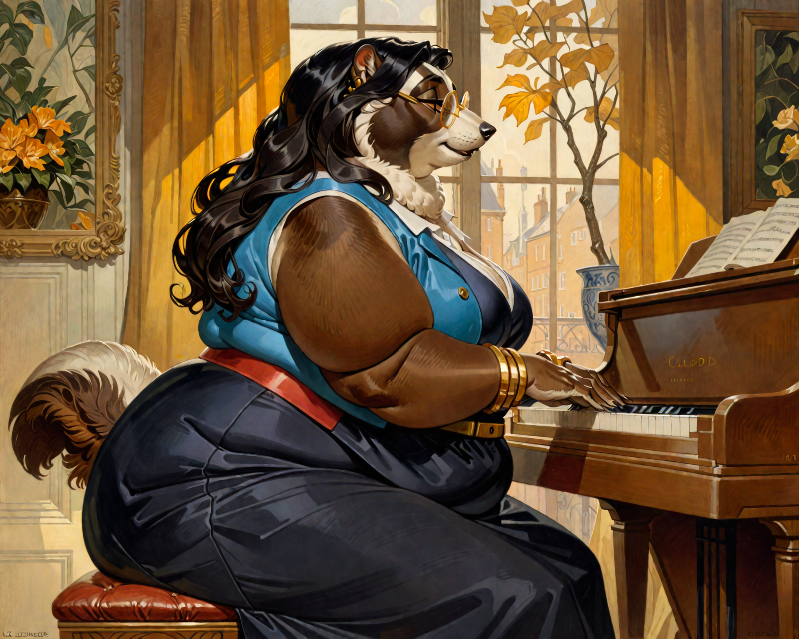
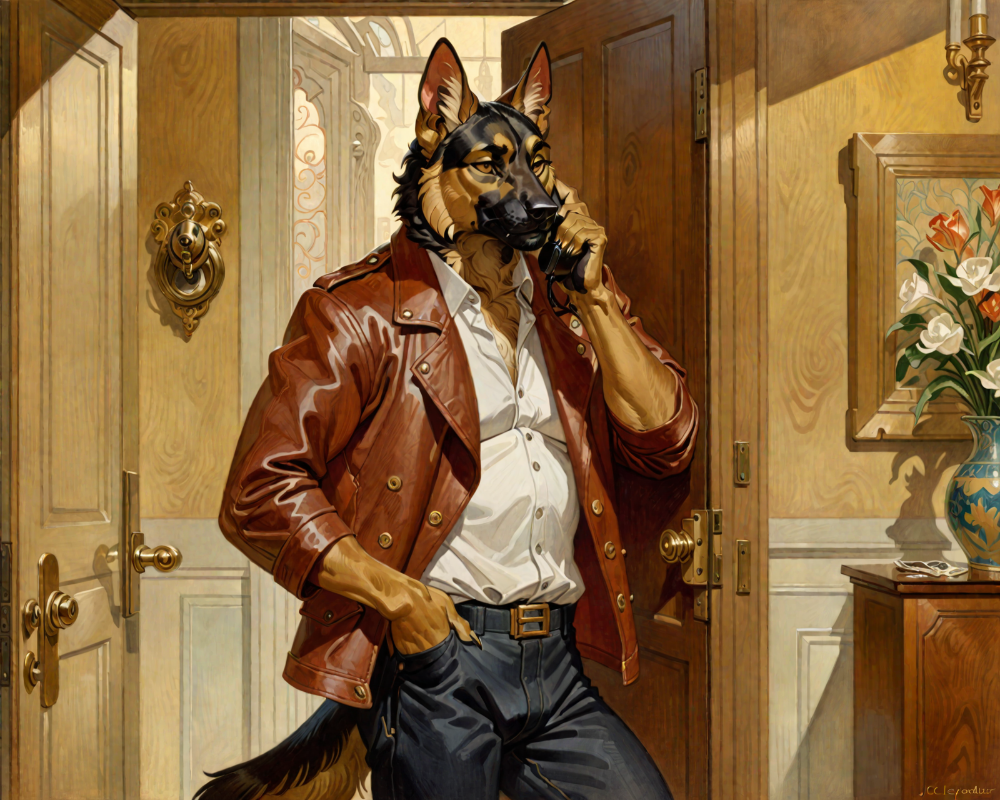
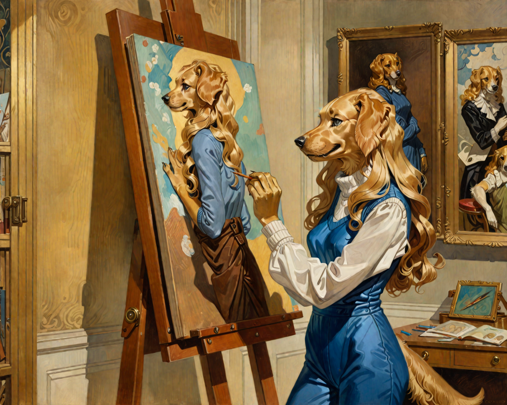

A Narrative Multiverse
The Lillianverse
Three anthropomorphic people — a badger, a German Shepherd, and a golden stray who became their daughter — living inside every story the human imagination has ever made.
Three people. A badger who fills every room she enters with warmth she can't help giving. A German Shepherd who fixes things — engines, rotas, moments about to go wrong. A golden retriever who was a stray until she wasn't, and who makes art from what that feels like.
They have lived in Byzantine Constantinople and Famine-era Ireland. They have run bakeries, solved Victorian murders, dissolved into Scottish hillsides. They have survived haunted art schools, governed empires, argued about toothbrushes on their first night in a Brixton flat.
Sixty stories. Ten worlds. One question asked every time: what survives, when everything else changes?
The Three
Meet the Characters
Each card is a door. Open it and you'll find not just a character summary, but a guide to everything they've been across the universe — every genre, every era, every mode of existing.

Character ILillian Edgecombe
Badger · Musician · Mother
Classically trained at the conservatory, rejected by the Royal Academy, she took a job at The Hungry Hound and wrote music anyway. She fills every space she occupies with warmth that feels like a choice — because it always is. At forty-two she is a music professor, a potter, a wife, a mother to a daughter she found in a warehouse. Across every universe she is always the one who makes room.
"I lived a home and became a home. Have you found your home yet?"Enter her world →

Character IIMiles Ferguson
German Shepherd · Engineer · Father
He started as a grocery store assistant manager with aspirations toward drumming. He became an engineer, a store director, a father — because he kept saying yes to the next thing that needed doing. He shows up: at the board meeting with warm cookies, at the end of the phone at 10:14 PM, in the car park at midnight when Lillian drives to collect him from himself. He labels her old photographs with captions she never knew she needed.
"It never counts as late for you."Enter his world →

Character IIISarah
Golden Retriever · Artist · Found
She was sixteen when Miles and Lillian found her in a warehouse. She had been surviving for long enough that she had almost forgotten there was another option. Now she is a sculptor who uses real shark teeth and knows exactly why. She carries her parents inside her like a tuning fork. She stirs her tea three times clockwise, twice counter — a gesture she learned from Lillian without knowing it.
"Art was one of the things that kept you alive in that warehouse. Your art is necessary."Enter her world →
Ten Worlds
The Universe
The same three souls inhabit ten distinct genre-worlds — each a different way of asking the same question. None of them the only truth. All of them true.
Begin Here
Read a Story
Three entry points. Choose your character. These are the opening lines of real stories from the universe — not summaries, not blurbs. The actual thing.
Primeverse · Lillian's Childhood
Two Hearts
The snow hadn't yet stuck to the cobblestones of the mews, but it dusted the windowpanes like sugar. Lillian sat on a cushion by the radiator, a big hardback book of shapes in her lap, though she hadn't turned a page in nearly twenty minutes. Her small, black-furred paws were folded in her lap, and her nose twitched every so often — half from the dry air, half from something harder to name.
Her mother Margaret was humming in the kitchen. Not singing, just something quiet and tuneless to fill the silence. She stirred two mugs on the stove — not in a rush, not for show. Just cocoa, the good kind.
"Darling?" Margaret said gently, glancing toward the sitting room. "You haven't moved in a while."
"I'm thinkin'," came Lillian's small voice, unusually still.
"Big thoughts?"
Lillian nodded, nose twitching. "I wanna change my name."
Primeverse · Brixton, 2004
Under the Quiet Lamp
The front door stuck the way it always did, even after Miles had kicked it three times. The latch finally gave with a shudder, and the two of them stumbled in like a pair of overpacked students breaking into a squat.
Lillian stood in the narrow hallway, surrounded by boxes and air that smelled like hot dust and old paint. Her shirt was sliding off one shoulder; her thick frame was wrapped in stretch cotton and humidity. She kicked off her boots and exhaled.
"Well," she said, "it hasn't shrunk."
Miles squeezed past her, dropping a duffel bag onto the upright Yamaha by the living room wall. "Feels smaller, though."
"It feels like someone lived here alone for too long." She turned, hands on broad hips. "And now she's going to have to make room."
"I can be small," he offered, though he was grinning.
"You're enormous," Lillian said, swatting him with a dish towel. "You take up entire sofas."
"I fold up." "You sprawl. Like a dog on holiday." "But I am a dog on holiday."
Primeverse · Manchester, 2023
Anytime After Ten
Emotionally immature. Derivative. Decorative.
That's what they said. As if she were sewing curtains.
She stared at her phone in the total darkness of her dorm room and lit it up with a thumb. 10:14 PM. She hesitated. Fumbled with the blanket, fidgeted with her pillow, turned herself on her left side. Still she could feel those words biting her hips.
She tapped the first name in her quick call list. It rang three times. She almost hung up.
"Hullo, Sarah?" The voice came sleepy, not annoyed.
"Hey," she said, trying to keep her voice steady. "Sorry, Dad. I know it's late."
"It never counts as late for you," Miles said gently. "You all right?"
Weirdverse · Northern Scotland, Field Journal
The Echoes at Dundhu
I promised I'd write every day, and here I am — in a tent, under Scotland sky, at the light of a rechargeable camping lamp. The rental car still smells of spilled coffee and sweat. But more than that, I can feel your love in the way you carefully packed everything in my field bag — spare cables coiled with engineer's precision, silica packets tucked into the recorder case, the small handwritten checklist you left on top: Batteries. Backups. Come home.
Your ears folded back when you handed me the waterproof case. German Shepherd worry, trying not to look like worry.
The Institute calls this place Dundhu — which sounds like a totally makeshift name, something that vaguely sounds like Scottish. It doesn't appear on any public map. Just a blank fold of northern Scotland, somewhere close to the Corrieshalloch Gorge. The road ended a kilometre ago. What's under my boots now is peat and heather and something else, something yielding that remembers being water.
The Institute's brief said: acoustic anomalies, unclassified harmonic events, possible environmental cognition. What it meant was: something is making music here, and no one understands who is listening.
From Neolithic to Now
The Timeline
A selective map of where these stories fall across time. The Primeverse anchors the present; the other verses spiral outward into every era.
The Project
About This Universe
The Lillianverse began as a single story and became an obsession with a single question: what would these three specific people be, placed in any world the imagination can produce?
Over sixty stories now. Ten distinct genre-worlds spanning from the Neolithic to speculative futures, from Victorian detective fiction to romantic comedy to body horror to mythic fantasy. And always, always the same three people — recognisably themselves across every transformation.
These stories are set in a world where anthropomorphic people have always existed. Their difference is never explained, never apologised for. It is simply present — shaping the small indignities and specific joys of lives lived in bodies the world wasn't quite designed for.
The first novel, Venus in Furs, is available now. The trilogy continues.